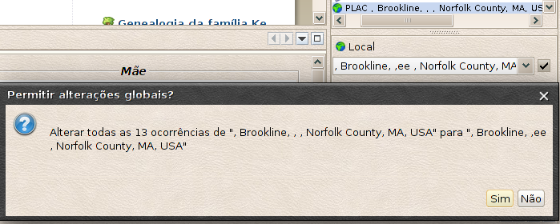

Gestão de locais
Resumo
- Ordenação das jurisdições
- Introdução das jurisdições
- Registo da ordem das jurisdições no ficheiro Gedcom
- Modificação global da formulação das jurisdições
É um capítulo importante. Uma leitura atenta
evita-lhe de ter, um dia, de repetir todo o seu trabalho.
A adoção de uma ordem de jurisdições
universal e homogénea, conforme à norma Gedcom, é
indispensável para facilitar as suas trocas e tornar mais precisa a
geo-localização dos eventos.
CAUTELA : antes de qualquer modificação, faça
uma cópia de segurança do seu ficheiro Gedcom.
Ordenação das jurisdições
Para introduzir um local, convém classificar as diferentes
jurisdições por ordem crescente de importância, separando
cada nível por uma vírgula. Se um nível estiver vazio,
mantenha a vírgula.
Conselho do Ancestris: contrariamente a certas
práticas, não deixe espaços entre as jurisdições.
São possíveis sete níveis de jurisdição:
Vila,Cidade,Código INSEE,Código postal,Concelho,Distrito,País
Não é obrigatório introduzir todos mas deve
respeitar a hierarquia desta ordem.

|
Se bem que o Ancestris permita introduzir também o código
postal, é preferível utilizar o
código INSEE. Com efeito, um código postal pode
reagrupar mais cidades enquanto o código INSEE
(sistema de código geográfico
criado em 1943), é único para cada cidade (só válido para França).
|
|
Introdução das jurisdições
Se optou pela apresentação ''Distinguir
jurisdições de locais'' (cf
Primeiras definições) não necessita das explicações seguintes, uma vez que introduzirá
as jurisdições nível por nível.
Para aqueles que não escolheram esta opção, o mais simples,
é um exemplo:
Para um evento localizado na vila
"Mézin", em Allanche (código INSEE 15160),
départamento do Cantal, em Auvergne, França. Convém
introduzir:

- Não pomos nada a seguir à palavra França.
- Se a vila for desconhecida, pomos uma vírgula no princípio
da linha.
- Para um evento em que só conhecemos a
cidade, escrevemos: ,Allanche,,,, (1 vírgula à frente e
4 vírgulas no final da linha).
É simples, a reter: ''Do mais pequeno para o maior e cada termo
separado por uma vírgula''.
Completar campo automaticamente
Dependendo dos dados introduzidos, tem um menu contextual que lhe propõe
os locais já conhecidos começando pela
mesma cadeia de caracteres. → Um clique esquerdo sobre
a linha proposta e Aceitar para validar.
Se escolheu para a introdução
"Preferências -
Distinguir jurisdições...", esta função existe
igualmente, mas linha a linha.
 Não
confundir o registo no ficheiro Gedcom
com a exibição dos locais nas vistas Não
confundir o registo no ficheiro Gedcom
com a exibição dos locais nas vistas
Registo no ficheiro Gedcom, é aqui
que a norma de organização das jurisdições deve ser
respeitada.
A exibição dos locais nas vistas, é a forma
como quer ver as jurisdições nas vistas
(por exemplo, escolher só ver a vila e o
país na árvore - cf
Preferências).
|
Registo da ordem das jurisdições no ficheiro Gedcom
É importante que esta hierarquia de locais (ou ordem
das jurisdições) seja descrita no cabeçalho
do seu Gedcom. É a regra interna fixada pelo
ficheiro Gedcom que permite ao Ancestris e aos outros
utilizadores lerem as jurisdições. Este registo
determina o formato de todas as suas etiquetas "PLAC".
Este registo deve ser feito logo na criação
duma genealogia ou a seguir à importação duma
genealogia criada com outro programa
(muitos não respeitam a norma).
- 1ª solução:
- Abrir o editor Gedcom. Apontar para uma linha PLAC (à
escolha)
- clique esquerdo (para a realçar) e depois clique direito
para abrir o menu contextual .
- descer até à linha ''Definir
a hierarquia para locais''

A linha de baixo serve para controlar, modificar ou
introduzir as diferentes jurisdições que tem
definidas para toda a sua genealogia.
Para validar a sua escolha: clique em "Continuar
e Definir a hierarquia para
locais".
Está feito! Pense em fazer uma cópia de segurança do seu trabalho.
- 2ª solução:
- Abrir o seu ficheiro Gedcom com um editor de texto.
Para Linux, utilize o Gedit, ou o Nedit ou o Jedit. Em Windows,
utilize o Notepad (nunca o Word). Em MacOs, utilize o
TextEdit.
0 HEAD
1 SOUR ANCESTRIS
2 VERS 0.5.0.1291
2 NAME Ancestris
2 CORP Ancestris Team
3 ADDR http://www.ancestris.org
1 DEST ANY
1 DATE 21 MAR 2011 <---- a data será diferente
2 TIME 18:44:12 <---- a hora será diferente
1 SUBM @B1@ <---- pode não ter esta linha
1 FILE pedro.ged <---- terá aqui o nome do seu ficheiro
1 GEDC
2 VERS 5.5
2 FORM Lineage-Linked
1 CHAR UTF-8
1 LANG Portuguese-Pt
Será suficiente juntar, logo após a linha
''1 LANG Portuguese-Pt'', as duas linhas seguintes:
1 PLAC
2 FORM Vila,Cidade,Código postal,Concelho,Distrito,País
Grave o seu trabalho, e já está, está feito!
Se já
introduziu centenas de locais no seu
ficheiro, o simples fato de juntar ao cabeçalho do
ficheiro Gedcom as duas linhas descritas no parágrafo
anterior não altera nada nestes locais
já registados. A única outra solução será
correr todos os locais da sua genealogia,
um por um.
uma outra solução para gerar a ordenação
das jurisdições (se hesita em fazer a modificação com o
editor de texto) é ir a "Ver/Listas
e relatórios/Caixa de ferramentas/5 - Gestão das
etiquetas de endereços PLAC".
|
|
O formato dos locais do seu ficheiro Gedcom assim como
as suas preferências de exibição podem
igualmente ser modificadas a
partir da extensão "Lista de locais".
|
|
Modificação global da formulação das jurisdições
Apercebe-se, depois de terminar,que fez
um erro dactilográfico numa localidade. Outra hipótese,
uma mesma localização foi inserida
duas vezes, de forma diferente.
Bastam alguns cliques para modificar de uma só vez
todos os locais envolvidos:
- realce uma das linhas PLAC que quer modificar (1)
- faça a modificação na área de introdução (2)-
neste exemplo acrescentámos "ee" - o que fará
aparecer uma caixa no fim da linha (3)
- marque esta caixa e depois "Sim" na janela de
confirmação (4)
- Só lhe resta clicar em Aceitar na zona
inferior do editor para validar a alteração.

Esta modificação é idêntica a partir de um ou
outro dos dois editores.